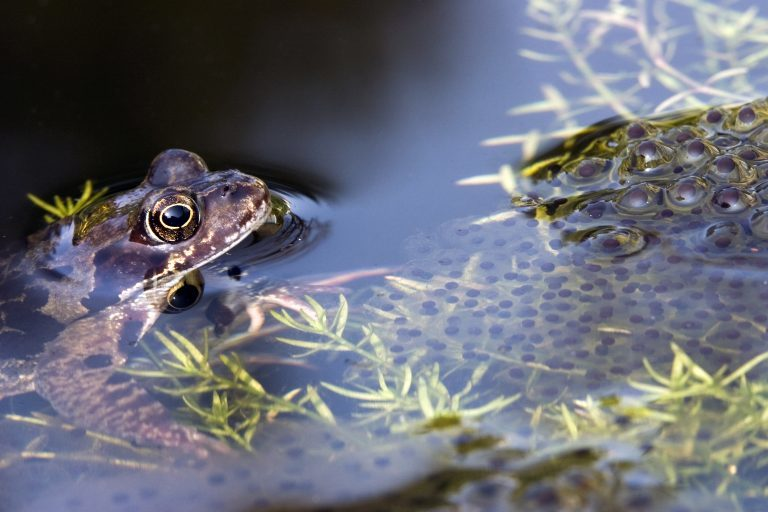
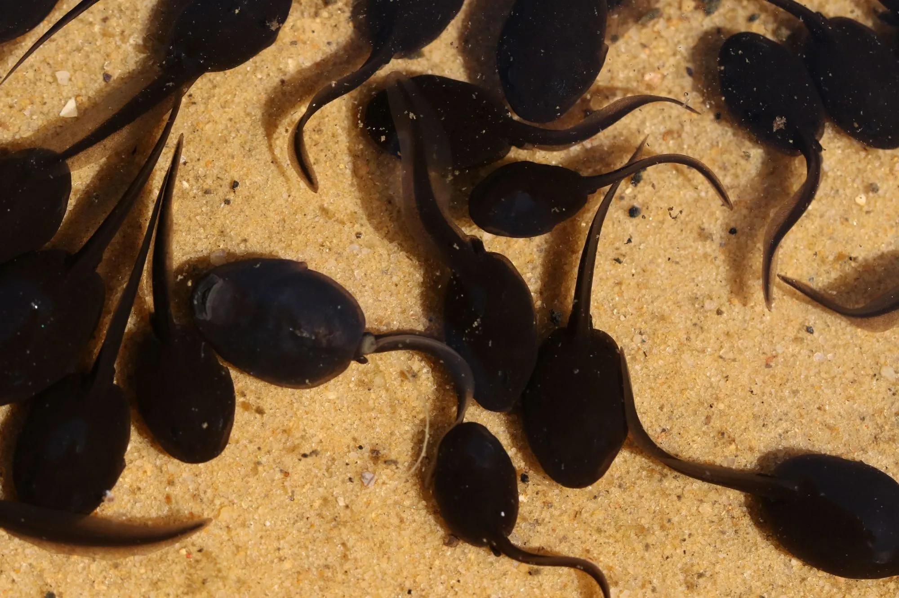
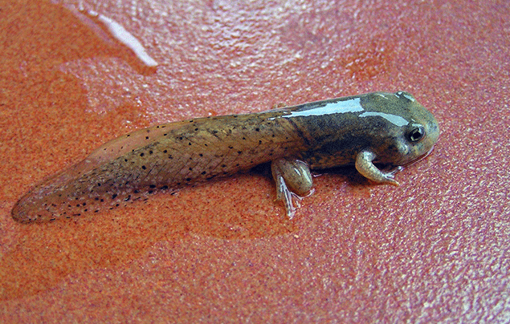

Click each step below to see more about the amazing lifecycle of a frog!
Adult frogs lay hundreds of eggs, which are known as spawn

For 1-3 weeks, the baby frog eats the yolk of the egg! Now the baby frogs are known as tadpoles. They have gills, a mouth, and a long tail for swimming.

Over the next 14 weeks, they grow back legs, then front legs! Then their body will start to change shape, and they're able to start eating insects.

Then, the frog is all grown up! Frogs are not reliant on water as long as they stay in the shade.

Don't believe us?! Check out the YouTube video below for even more information!